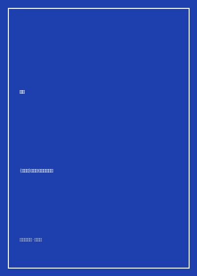

《鱼王》

总体观点
《鱼王》（Царь-рыба）是俄罗斯文学寻根与生态反思传统中不可逾越的巅峰之作。作家维克托·阿斯塔菲耶夫扎根西伯利亚故土，将目光投向浩瀚壮美、奔流不息的母亲河——叶尼塞河。全书由一系列由浅入深、相互映衬的长篇抒情叙事连环编织而成，生动描摹了生活在极北荒原森林中的猎人、渔夫、淘金者与护林员在严酷大自然怀抱中的爱恨情仇与生存搏杀。
小说的灵魂篇章《鱼王》讲述了丘什村最老练、捕鱼技艺最出神入化的渔夫伊格纳季奇的命运。伊格纳季奇家境富裕、精明体面，却有着不可遏制的非法偷捕欲望。在深秋寒冰初凝的大河险滩上，他遭遇了一条潜行百年的传奇巨鲟——“鱼王”。这条巨兽体长逾丈、浑身覆盖如铠甲般的骨板，象征着古老自然至高无上的神秘主权。贪婪的渔夫企图独吞巨鱼，孤身一人展开搏斗，却被倒钩渔线和巨鲟垂死挣扎的巨力拉扯跌入冰冷的大河激流之中。
在人与鱼同被几十枚淬毒尖锐的倒钩钩住、在濒死冰流中紧紧捆绑在一起的绝望时刻，物理的生死搏杀升华为一场灵魂深处的终极审判。在死亡阴影的逼视下，老渔夫一生中自鸣得意的伪善面具被瞬间剥离，青年时代强暴抛弃纯洁少女格拉菲拉的陈年罪孽如毒蛇般撕咬良心。他终于在冰水深渊中向上苍痛哭忏悔，忍痛用猎刀割断渔网放巨鱼一条生路。巨鲟摆尾游入深海，老渔夫在岸边冻土上捡回残命。阿斯塔菲耶夫以神圣的悲悯警示现代文明：人类若继续自命为万物主宰妄图征服自然，终将在大自然的报复与内心的罪恶泥潭中走向灭亡。
核心观点
-
1. 鱼王作为自然的化身：超越人类贪欲与主宰幻觉的神圣图腾
在古老的西伯利亚民间信仰中，巨鲟“鱼王”是大河灵性与生态法则的实体承载。凡是心怀罪孽之人一旦妄图捕捉鱼王，必将招致大自然最严厉的复仇惩戒。
“那是鱼王！在水雾蒸腾的河心，巨鲟银灰色的庞大身躯如同一堵沉睡的花岗岩石壁破水而出，冰冷沧桑的眼睛直视着渔夫，仿佛看穿了他一生的卑劣。” -
2. 生死相扣的宿命镜像：人与猎物在同一根毒钩网上同归于尽
人类设下的致命陷阱最终必然套在人类自己脖颈之上。当渔夫与巨鱼被同一排锋利倒钩牢牢锁死在冰冷激流中时，人与自然同生共死的终极真理暴露无遗。
伊格纳季奇的皮靴、大腿与衣物被数十枚锋利的铁钩刺穿，巨鱼每一次摆尾挣扎都会将冰冷的铁钩更深地拉入他的皮肉骨髓，人与鱼在血水中贴面相拥。 -
3. 濒死时刻的良心清算：深埋数十年的隐秘罪愆在深渊中苏醒
面对死亡的终极审判，世俗积累的金钱与名望瞬间化为飞灰。唯有未曾忏悔的道德罪孽会化作烈火焚烧灵魂，逼迫狂妄者低头向受害者与神明认罪。
在冰水灌入肺部的前一刻，伊格纳季奇眼前浮现出几十年前被自己侮辱逼婚、投河未遂后疯癫一生的少女格拉菲拉那张苍白泪容，发出撕心裂肺的哀嚎：“饶恕我吧！” -
4. 割断渔线的救赎之刀：通过放下占有欲换取肉身与灵魂的重生
真正的救赎不是战胜猎物，而是克制征服欲。唯有主动松开紧握利益的执念之手，给大自然留出退路，人类自己才能在悬崖边缘赢回活下去的权利。
伊格纳季奇在被拖入河底深渊的最后一秒，抽出腰间锋利的猎刀狠心斩断了缠满手臂的自制密钩渔线，眼看着巨鱼携着断钩向浩瀚大河深处潜游而去。 -
5. 叶尼塞河的永恒奔流：人类渺小过客在伟力荒原前的终极敬畏
大自然不需要人类的赞美与开采，它在人类到来之前已奔流亿万年，在人类喧嚣散尽后依然在群山苍松间静穆长流。敬畏是人类生存的唯一立足点。
经历劫难瘫软在岸边碎石滩上的老渔夫仰望晨曦，叶尼塞河波涛汹涌拍击峭壁，大河如同什么都不曾发生过一样奔流向北冰洋，神圣冷漠而浩瀚无垠。
全书结构
-
第一卷 第一至三篇 远处的瀑布、捕鸟者与叶尼塞河畔小镇
描绘西伯利亚原始泰加森林的壮丽植被、清冽空气与卡普利哈小镇淳朴而野蛮的捕鱼风俗，展现人与北方大荒原共生的日常生活。
细腻记录初夏时分白夜笼罩下的叶尼塞河，两岸冷杉林如黑绿色的长矛直插云霄，河面上回荡着水鸟清脆的啼鸣与船夫的粗犷号子。 -
第一卷 第四至六篇 达姆卡与白鹅沼泽的生态变迁
聚焦边缘人物与偷猎者在湿地荒原上的盲目杀戮，反思现代工业伐木与炸鱼机对原本纯净的鱼类繁殖生态链条造成的不可逆破坏。
描绘外来淘金工人用雷管抛入清澈溪流炸鱼，数千条刚孵化的小鲑鱼肚皮翻白浮满水湾腐烂发臭，老猎人站在岸边痛心疾首咒骂。 -
第二卷 第七篇 核心篇章《鱼王》（大河上的生死对决与忏悔）
全书思想高潮，老渔夫伊格纳季奇孤身夜捕遭遇传说中巨鲟鱼王，人鱼搏杀同落冰流死扣，在濒死深渊中向神明坦承强暴罪孽并割线放生。
伊格纳季奇被冰冷的倒钩勾住皮肉与巨鲟在激流中翻滚数小时，巨鱼冰凉黏滑的鱼鳞紧贴着他的脸颊，在濒死幻觉中完成震撼灵魂的良心大清算。 -
第二卷 第八至十篇 鲍加尼达渔汛与痛断肝肠的北方旅程
跟随流浪儿童、女工与老船长深入北极圈内的渔汛营地，展现极北严寒环境下普通劳动者相濡以沫的温情与残酷命运的碾压。
记录患结核病的女孩在简陋的木板渔棚里就着煤油灯微弱的光线给远方的母亲缝制鹿皮手套，炉火噼啪作响窗外暴风雪呼啸。 -
第二卷 第十一至十二篇 梦中的黑云与永恒奔流的母亲河
全书尾声，阿斯塔菲耶夫登上山峦绝顶俯瞰大河入海，反思人类文明的虚荣盲动，向大自然浩瀚神圣的自然秩序献上最深沉的祈祷与敬畏。
“奔流吧，大河！带着你的冰霜与波涛奔流向大海吧……在人类所有的罪恶与忏悔之上，大自然永存，大地永存。”